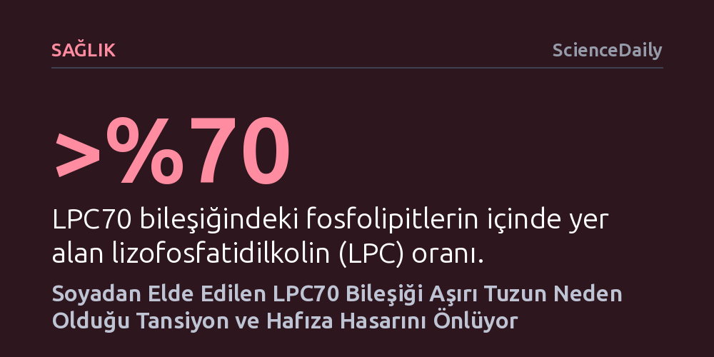

SAGLIK · ScienceDaily · 2026-10-19
Japon araştırmacılar, soyadan elde edilen LPC70 adlı bileşiğin aşırı tuz tüketen farelerde yüksek tansiyonu düşürdüğünü ve hafıza ile sosyal etkileşim kayıplarını önlediğini saptadı. Bileşik, böbrek ve beyindeki prostaglandin sinyal yolaklarını organa özgü biçimde düzenleyerek koruma sağlıyor.
Aşırı tuzun yalnızca damar sağlığını değil bilişsel fonksiyonları da doğrudan bozduğunu ve soya kökenli doğal bir bileşikle bu hasarın organa özgü sinyal mekanizmaları üzerinden engellenebileceğini gösteriyor.

Aşırı tuz tüketiminin kalp ve damar sağlığı üzerindeki olumsuz etkileri uzun süredir bilinse de, yeni bilimsel veriler bu zararın çok daha derine indiğine işaret ediyor. Fazla sodyum alımı yalnızca kan basıncını yükseltmekle kalmıyor; beynin hafıza, öğrenme ve duygusal dengeyi yöneten kritik bölgelerinde de işlev kayıplarına yol açabiliyor. Modern diyetlerdeki yüksek tuz oranı, artık yalnızca kardiyovasküler bir risk faktörü değil, aynı zamanda bilişsel gerilemeyi hızlandıran önemli bir halk sağlığı sorunu olarak öne çıkıyor.
Japonya'daki Fujita Sağlık Üniversitesi ve Mie Üniversitesi araştırmacılarının yürüttüğü çalışmada, yüksek tuzlu diyetle beslenen farelerde beklenen tansiyon yükselmesinin ötesinde çarpıcı davranışsal değişimler gözlendi. Deney hayvanları diğer farelerle iletişim kurmakta isteksizleşti ve daha önce karşılaştıkları nesneleri tanımakta güçlük çekti. Bu durum, tuzun genel bir uyuşukluk ya da kaygı hali yaratmaktan ziyade, doğrudan sosyal ilişki ve nesne belleği gibi üst düzey zihinsel süreçleri hedef aldığını ortaya koydu.
Ortaya çıkan bu çift yönlü hasara karşı araştırmacılar, soyadan elde edilen doğal bir bileşen olan LPC70'e odaklandı. Soya lizolesitininin saflaştırılmış bir formu olan LPC70, fosfolipit içeriğinin yüzde 70'inden fazlasını lizofosfatidilkolin (LPC) olarak barındırıyor. Gıda içerikleri geliştiren Tsuji Oil Mills iş birliğiyle yürütülen projede, bu takviyenin aşırı tuzun yol açtığı hasarı nasıl hafiflettiği moleküler düzeyde incelendi.
Yüksek tuzlu diyetlerine LPC70 takviyesi eklenen farelerde dikkate değer bir toparlanma kaydedildi. Hayvanların kan basıncı gerilerken, sosyal etkileşim testlerindeki performansları ve nesne tanıma hafızaları belirgin biçimde düzeldi. Hareket kabiliyetinde veya kaygı düzeylerinde bir değişim olmaksızın sadece bilişsel ve sosyal performansın iyileşmesi, takviyenin beynin özgül işlevlerini hedef alarak koruduğunu gösterdi.
Araştırmanın asıl çığır açıcı yönü, LPC70'in vücutta nasıl çalıştığını çözen moleküler analizlerde gizli. Vücutta yerel hormonlar gibi işlev gören ve arakidonik asit adı verilen bir yağ asidinden üretilen prostaglandinler, organına göre farklı görevler üstleniyor. Kan damarlarında genişleme ve daralmayı dengelerken, beyinde bağlandıkları reseptöre göre ya sinir hücrelerini koruyor ya da iltihap ve hasara yol açıyor.
Ekip, aşırı tuzun böbreklerde tansiyon artışını tetikleyen COX-2 enzimini ve EP3 reseptörünü artırdığını, LPC70'in ise bu yükselişi baskılayarak tansiyonu kontrol altına aldığını saptadı. Buna karşılık beynin düşünme ve bellek merkezi olan prefrontal kortekste tam tersi ve koruyucu bir mekanizma işletildi. Tuzun baskıladığı iltihap önleyici DP1 reseptörünün ifadesi LPC70 ile yeniden artırılırken, hücre hasarıyla ilişkili DP2 reseptörüne dokunulmadı.
Üstelik dolaşımdaki hammadde olan arakidonik asit seviyesi tuz nedeniyle düşmüş olmasına rağmen, LPC70 verilen farelerde yararlı prostaglandin seviyelerinin yükselmesi dikkat çekti. Bu durum, bileşiğin vücuttaki sınırlı kaynakları koruyucu mekanizmalar lehine çok daha verimli kullandırmayı başardığını gösteriyor.
Elde edilen sonuçlar, LPC70'in gelecekte yüksek tuz tüketiminin zararlarına karşı koruma sağlayabilecek işlevsel bir gıda bileşeni olma potansiyeli taşıdığını gösteriyor. Özellikle tuzu kesmekte zorlanan veya tuza bağlı tansiyon ve hafıza sorunları yaşayan bireyler için beslenme temelli bir destek mekanizması umudu doğuruyor.
Yine de bulguların henüz laboratuvar ortamında ve fare modelleri üzerinde elde edildiğini unutmamak gerekiyor. Aynı etki mekanizmasının, güvenli dozaj aralıklarının ve koruyucu faydaların insan metabolizmasında da birebir geçerli olup olmadığını kanıtlamak için kapsamlı klinik denemelere ihtiyaç var. Araştırma ekibi, bu çalışmanın hipertansiyona bağlı bilişsel kayıpları önlemeye dönük klinik araştırmalara sağlam bir zemin hazırladığını belirtiyor.